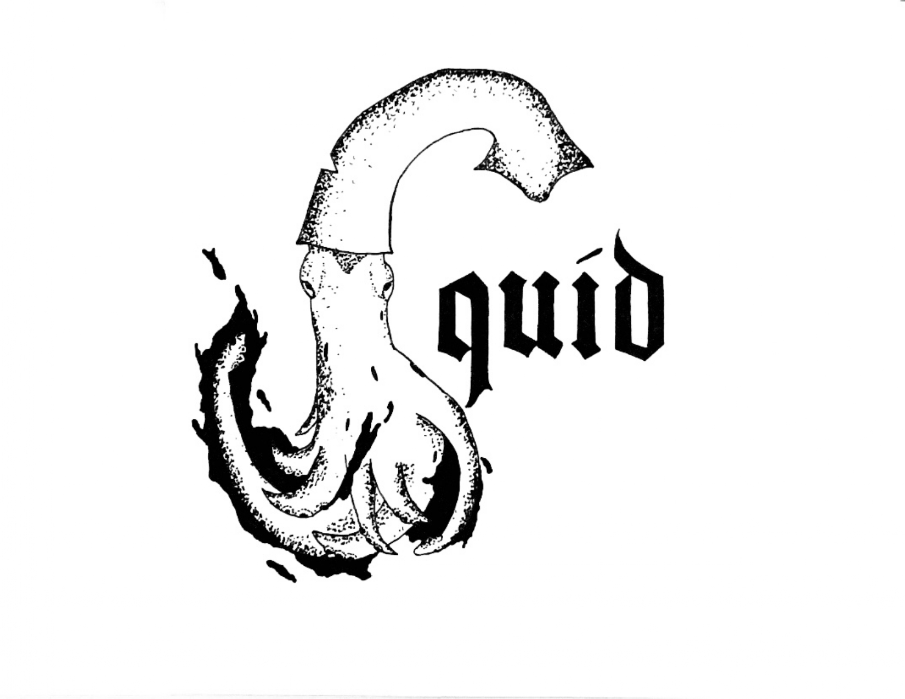
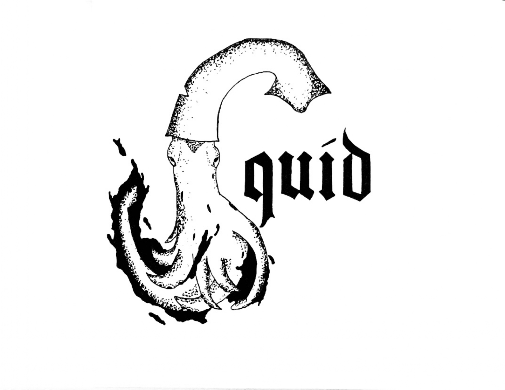
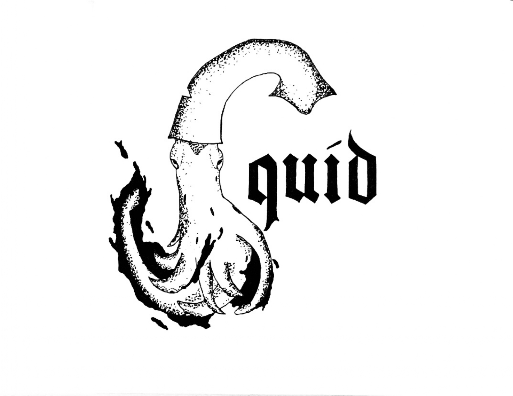
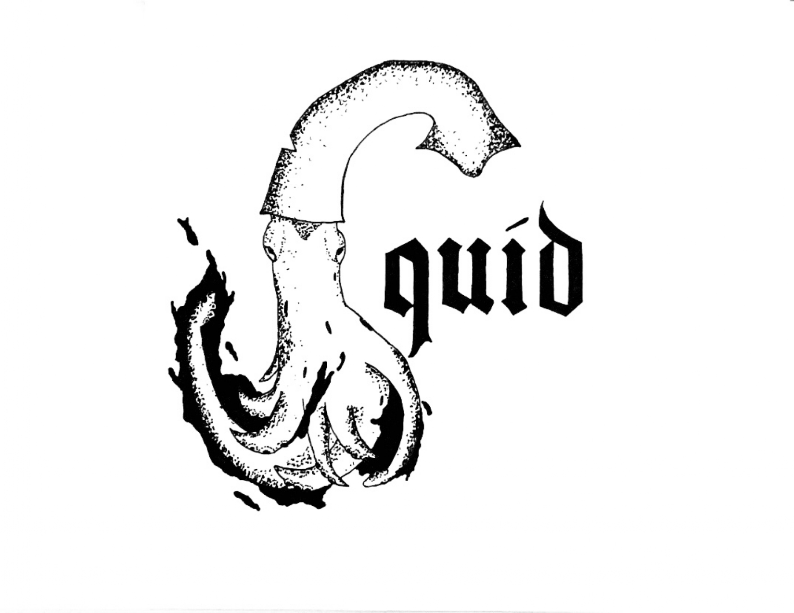

My Work

 


I am a 21-year-old Graphic Design student. When I first got out of high school I went to university and studied for a year, majoring in Theology. After my first year I realized that I wanted to do something completely different with my life and started looking at my options. It didn’t take long for me to decide on the Graphic Design program at Algonquin. Although the program is entirely different from what I was studying previously, I knew right away that it was the right fit for me. I loved my first year at Algonquin and am excited to see what second year brings.
 
